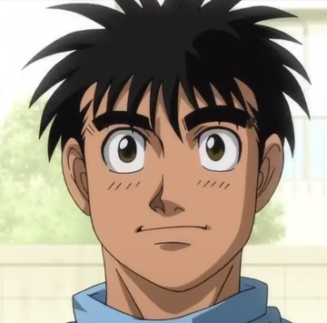
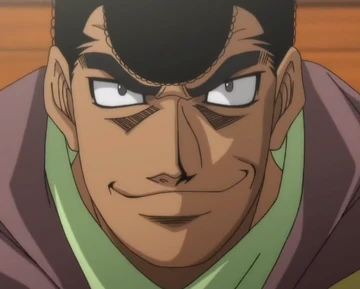
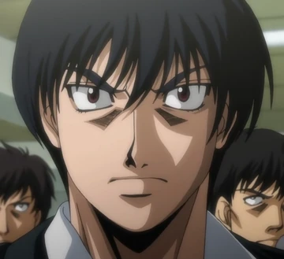

-
Introducción: Es el protagonista de la serie. Es un entrenador en el Gimnasio de boxeo Kamogawa y el ex campeón de peso pluma de Japón.
-
Pasado: La mayor parte de su infancia fue críado por su madre, ya que su padre murió durante una tormenta en un barco de pesca. Desde esa tragedia, él se dedicó a ayudar en el negocio de pesca familiar junto con su madre y algunos de los amigos de su padre. Durante su tiempo en la escuela siempre fue intimidado y agredido por los chicos grandes y trataba de ocultar las heridas para no preocupar a su madre.
-
Estado actual: Retirado.
-
Historial de peleas: 26 peleas, 23 victorias, 3 derrotas y 23 KO.
Ippo Makunouchi

Mamoru Takamura

-
Introducción: Es el deuteragonista de la serie. Es un boxeador en el Gimnasio de boxeo Kamogawa y el campeón mundial de multiples categorías de peso.
-
Pasado: Es el hijo del medio de una familia adinerada y solía ser un jugador de rugby durante la secundara. Hasta que un día inició una pelea con el equipo de otra escuela, haciendo que no solo fuera hechado de su club, sino que también se volviera un matón que pelearía con quien sea. Pero todo cambió cuando conoció al dueño del gimnasio, Genji Kamogawa, y este los introduciera al mundo del boxeo.
-
Estado actual: Activo.
-
Historial de peleas: 28 peleas, 28 victorias y 28 KO.
-
Introducción: Es un boxeador en el Gimnasio de boxeo Kawahara y el campeón de peso pluma de la OPBF (Oriental and Pacific Boxing Federation).
-
Pasado: Cuando era muy chico, siempre admiraba a su padre, quien fue el ex campeón de la OBBF, y lo veía pelear en vivo todas las veces que podía. Además fue su padre la razón de porque quería hacer boxeo y volverse campeón mundial, ya que su padre nunco lo consiguió y lucha por realizar su sueño no cumplido.
-
Estado actual: Activo.
-
Historial de peleas: 28 peleas, 26 victorias, 1 empate, 1 derrota y 22 KO.
Ichiro Miyata
